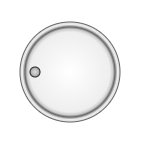

Home → Segment Knob
Knob is a rotary control for changing any value (Fig. 1).

Рис. 1 - Knob
The following scripts should be included in the <head> section:
To create an object, the main parameters are passed to the constructor function:
id - knob identificator as a text string.
context - CanvasRenderingContext2D for drawing the knob.
cx - X coordinate of the base segment.
cy - Y coordinate of the base segment.
r_in - inner base segment radius.
thickness - thickness of the base segment.
init_angle - the initial angle of the base segment in degrees. May take negative values.
angle - angle of the base segment in degrees.
The outer radius of the base segment r_out will be calculated automatically during the creation of the object.
The object will take the form of a ring if you set the angle of the segment to a multiple of 360 degrees.
The object will take the form of a circle segment if the inner radius r_in is set to 0.
The object will take the form of a circle if both of these conditions are met.
Examples of using various properties and methods of the object.
SegmentKnob is a composite object. It includes:
base_segment - segment that defines the base of the knob.
Also, the knob has a notch that indicates the current value of the changing parameter.
Valid notch type values:dot - SegmentDot.
mark - SegmentScaleMark.
The notch has the following general parameters:
notch_type.
notch_init_angle - the initial angle of the notch relative to the base segment. It defaults to half the angle of the base segment.
notch_min_angle - minimum notch angle.
notch_max_angle - maximum notch angle.
notch_angle - current notch angle.
notch_width - width of dot border, or width of mark.
notch_color - color of dot border, or color of mark.
The following parameters can be specified for the dot notch:
dot_radius.
dot_base_radius.
dot_gradient.
dot_background.
The following parameters can be specified for the mark notch:
mark_r_in.
mark_length.
gradient - base segment fill gradient. Type of value is SegmentGradient.
background - base segment fill color (applies if fill gradient is not specified).
border_width - base segment border width.
border_color - base segment border color.
visible - value true ensures object visibility.
notch_visible - value true ensures notch visibility.
in_progress - flag takes the value true during the animation.
is_active - flag takes the value true during grabbing and rotating the knob.
build() - performs basic calculations of the shape and style of object, taking into account the specified properties and flags.
calcBorder() - computes base segment borders styles. Called automatically from calc() method.
draw() - draws an object.
instanceCopy() - creates an independent copy of the object.
isPointInside(x, y) - function for checking whether a point with coordinates (x,y) belongs to a figure.
setNotchAngle(angle) - changes the position of the knob to bring the notch to the angle.
catchKnob(e) - grabbing the knob by left clicking on it.
The method is set as a listener for the mousedown event on the canvas.
The listener is available through the mousedown parameter to ensure that it can be removed.
Removing and redefining a listener is necessary in compound objects (for example, a volume control).rotateKnobByMouseMovement(e) - rotating the grabbed knob by mouse move.
The method is set as a listener for the mousemove event on the canvas.
The listener is available through the mousemove parameter to ensure that it can be removed.
Removing and redefining a listener is necessary in compound objects.rotateKnobByMouseWheel(e) - rotating the grabbed knob by mouse wheel.
The method is set as a listener for the wheel event on the canvas.
The listener is available through the wheel parameter to ensure that it can be removed.
Removing and redefining a listener is necessary in compound objects.releaseKnob() - the grabbed knob is released by releasing the left mouse button.
The method is set as a listeners for the mouseup and mouseout events on the canvas.
The listeners are available through the mouseup and mouseout parameters to ensure that it can be removed.
Removing and redefining a listener is necessary in compound objects.
Events triggered by a SegmentKnob are implemented using a CustomEvent.
In the detail.knob field, a link to the object itself is passed.
segment-knob-changed - state of the object is changed.
Home → Segment Knob